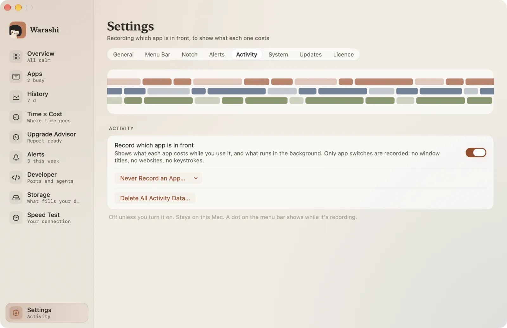
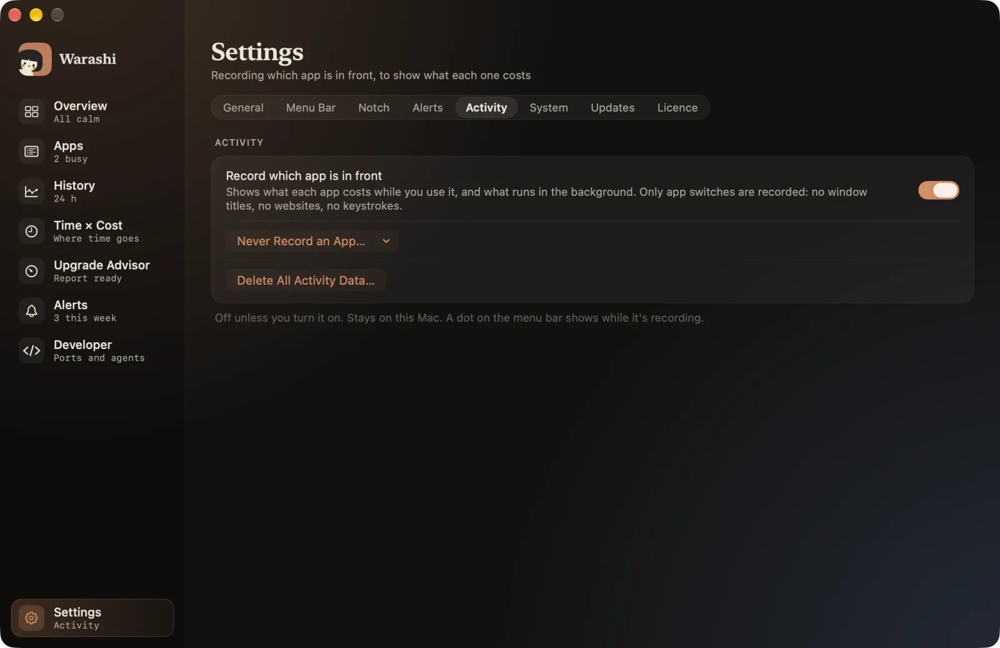

Time × Cost joins two things: how long each app was in front, and what it cost in energy. It answers “what does this app cost me per hour?” and “what drained my battery while I wasn't even using it?”.
Turn it on
- Open Settings › Activity
Press ⌘, and choose the Activity tab.


- Turn on Record which app is in front
Warashi now notes only which app is in front. No window titles, no websites, no keystrokes, and it never asks for Screen Recording or Accessibility. A small dot beside the spirit shows while it records.
- Exclude apps if you like
Never Record an App… keeps chosen apps out entirely. Delete All Activity Data… erases everything recorded so far.
Read it
- Open Time × Cost
Choose Time × Cost in the sidebar or press ⌘4. Step through days with the arrows at the top. Switch to Week for the weekly summary.


- Apps you used
For each app: time in front, energy while in front, energy in the background, and energy per hour of use.
- Background drain
Apps that used energy without ever coming to the front: often the surprising ones.